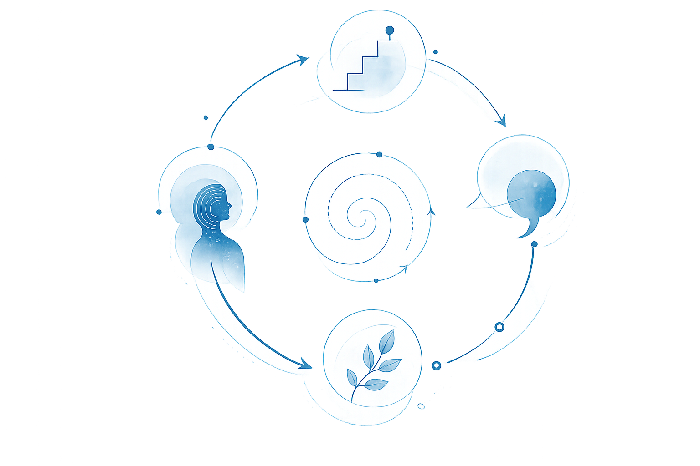
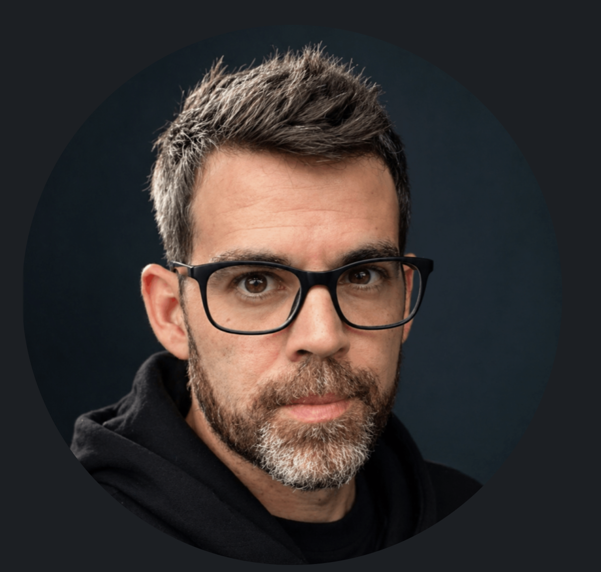

I help leadership teams diagnose why product & engineering execution becomes slow, noisy, and unpredictable, even with capable people in place.
Work with me Book a call →
01 You might be here if
02 What I do
When the system around the work breaks down, effort stops translating into progress. Priorities shift, decisions blur, work piles up, bottlenecks hide, and nobody has a clear picture of what's actually in the way.
AI sharpens this. For teams with a clear operating model, it's a real multiplier. For everyone else, it accelerates existing dysfunction: more throughput into the same bottlenecks, a wider gap between activity and outcomes.
I help CEOs, CTOs, and VPs of Engineering find what's actually in the way — and make the path forward clear.
The business should be able to feel the difference.
03 How I work
04 Engagements
Engagement
Execution slows down when it’s unclear what’s actually getting in the way. I identify the organizational, technical, and leadership patterns creating friction, and which changes are worth making first.
You walk away with:
Fixed scope. Typically completed in 2–4 weeks. Remote or on-site.
Fractional leadership
For organizations where product & engineering execution is struggling despite having capable people in place.
I step into existing leadership structures to help diagnose organizational dysfunction, stabilize execution, improve decision-making, and restore coherence across product & engineering.
The goal is to get product & engineering working well again, under the pressure the organization is actually operating in.
Typical areas of focus:
Typically 2–6 months depending on scope and organizational needs.
05 Patterns I see
"We adopted AI. PRs are up. The business doesn't feel it."
"Everyone is busy. Everything is in progress. Nothing is actually done."
"Every week, the priorities change. We can never plan."
"We hired strong engineers and still don't ship enough."

06 Why me
For the last 20 years, I’ve repeatedly been brought into struggling technical organizations to figure out why things weren’t working, and help turn them around.
Across startups and larger companies, I’ve been strongest at:
The causes are usually tangled: technical debt, unclear ownership, leadership blind spots, people problems, weak communication, and teams slowly drowning in complexity.
My background spans software engineering, product & engineering leadership, systems thinking, and executive coaching.
I’m not a hype merchant, a transformation consultant, or a "10x AI productivity" salesman. I help leadership teams see clearly what’s breaking, and what to do about it.
07 Get in touch